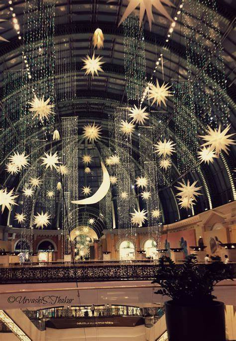
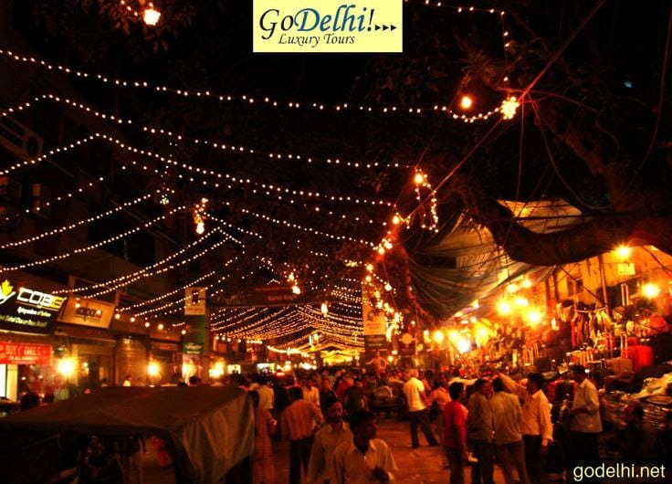

تتميز أجواء شهر رمضان المبارك بالزينة والفوانيس والأنور المبهجة، حيث يتم تزيين الشوارع والمساجد وتعليق الأضواء بشكل
وتحولت تلك العادة إلى طقس مستمر مرتبط بشهر رمضان

من أهم مظاهر وطقوس الاحتفال بشهر رمضان الكريم
وبحسب ما تسجله كتب التاريخ، فإن أول من بدأ فكرة الاحتفال بقدوم شهر رمضان هو الخليفة عمر بن الخطاب، عندما قام بتزيين المساجد وإنارتها من اليوم الأول لرمضان، حتى يتمكن المسلمون من إقامة صلاة التراويح وإحياء شرائعها الدينية

وحسب الروايات، فإن أول من أضاء المساجد كان الصحابي الجليل تميم بن أوس الداري، وقد أضاء المساجد بقناديل يوضع فيها الزيت وكان ذلك يوم
وذكرت العديد من الدراسات أن الزينة تطورت في العصر الحديث بعد دخول الكهرباء في نهاية القرن التاسع عشر
كان يرجع الاحتفال في مصر بشهر رمضان مع بداية الدولة
فقد كانوا يحتفلون به من خلال تزييمن الشوارع وإنارة
ثم اتخذت الإنارة شكلا جديدا مع الفانوس الذي تم اختراعه لاستقبال المعز على أبواب القاهرة وهو قادم من تونس عام 262 هجريا